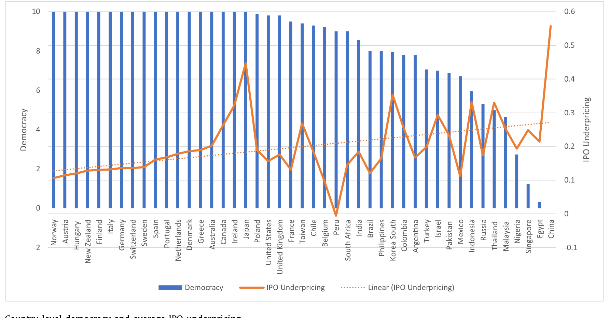
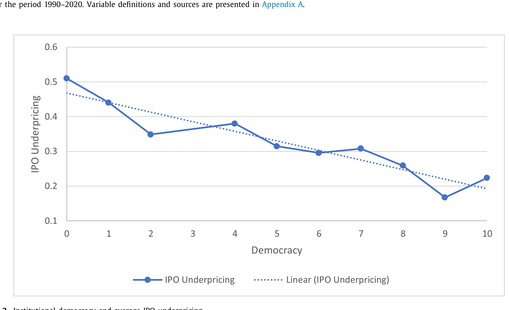
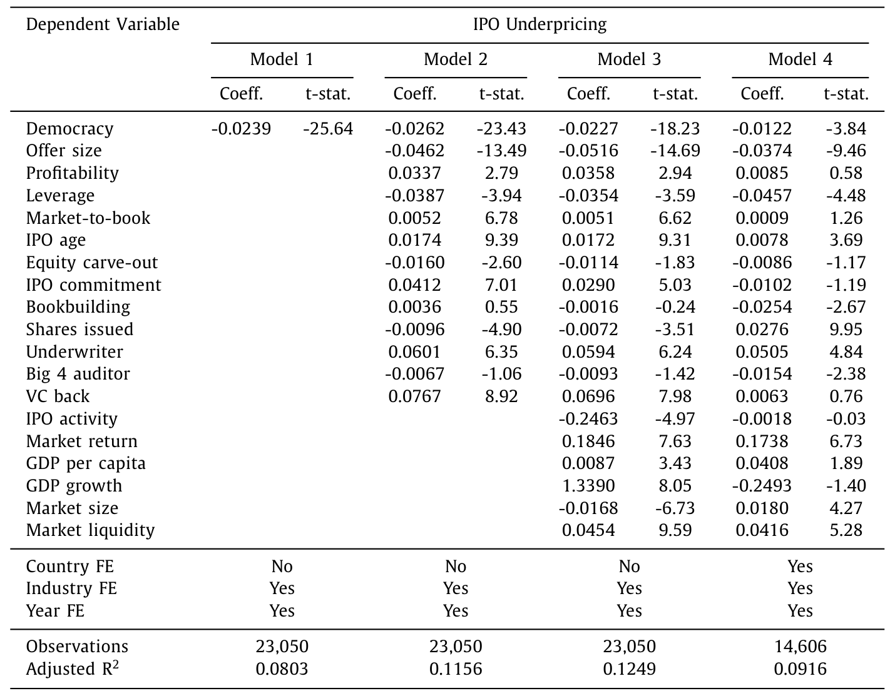
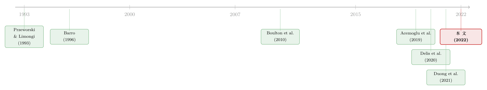

民主越成熟，新股就越不必「打折」？
本文读的是 Duong, Goyal, Kallinterakis & Veeraraghavan (2022, JFE)：用 1990–2020 年间 45 个国家、23,050 宗 IPO 的样本，作者发现一个国家的制度民主水平越高，它的新股首日抑价就越低——民主分值每上升一个标准差，抑价就少 7.64 个百分点，相当于全样本平均抑价的 29.31%。这条关系的「发动机」，是民主对信息不对称的压制。
1 一个被「抑价」困住的老问题
先从一个几乎所有金融学学生都背过、却从未真正解决的现象说起：IPO 抑价（IPO underpricing）。
一家公司第一次公开发行股票，承销商定了一个发行价（offer price），可第一天收盘，市场往往把它捧得更高。发行价和首日收盘价之间的那道缝隙，就是抑价。把这道缝隙除以发行价，就是这篇论文的被解释变量。在本文这个跨 45 国的样本里，它的均值是 0.2607，中位数是 0.1133——换句话说，全世界的发行人平均把超过四分之一的钱「留在了桌子上」（money left on the table）。
为什么发行人甘愿白送这么一大笔钱？经典的解释指向信息不对称（information asymmetry）：IPO 公司大多年轻、不成熟、信息高度不透明（Ljungqvist, 2007），外部投资者要承担「我会不会买到一只柠檬」的风险，抑价就是对这种风险的补偿——发行人不打这个折，谨慎的投资者根本不会进场。（关于「抑价究竟是不是信息不对称的均衡补偿」，可参见《自由进入的市场里，为什么钱还能「白赚」？》。）
到这里都还是教科书。真正有意思的问题是下一句：既然抑价的根子是信息不对称，那么什么样的「环境」能把这种不对称压下去？
过去十几年，一批做国际 IPO 的学者已经把答案的一部分挖了出来：一国的会计盈余质量（Boulton et al., 2011）、会计稳健性（Boulton et al., 2017）、卖空管制（Boulton et al., 2020）、市场操纵规则（Duong et al., 2021）——这些制度细节，都能解释为什么有的国家新股打折狠、有的国家打折轻。但这些都是制度的枝叶。本文作者往上追问了一层：这些枝叶长在什么样的「土壤」里？是什么决定了一个国家会不会有高质量的会计、自由的媒体、可信的监管？
他们的答案是一个听上去离金融市场很远的词：民主。
2 为什么是「民主」，而不是「富裕」
这是全文最需要小心的一步，也是它最容易被质疑的一步。一个自然的反驳是：民主国家往往也是富国，富国的资本市场更成熟、信息更透明——你测到的「民主降低抑价」，会不会只是「富裕降低抑价」换了张脸？
作者的论证分两条线。
第一条是机制（mechanism）线。 民主为什么应该降低抑价？他们给了两个相互交织的渠道。其一，民主体制下信息流动更自由、信息不对称更低（Delis et al., 2020）——自由的媒体、独立的监督，让 IPO 公司更难把坏消息藏起来；其二，民主扩张了政治权利，进而强化了产权保护、制衡机制与社会稳定（Friedman, 1962；Acemoglu et al., 2019），这降低了代理冲突（principal–agent conflict）——而代理摩擦恰恰是 IPO 抑价的核心驱动之一（Brennan and Franks, 1997；Ljungqvist and Wilhelm, 2003）。两条渠道指向同一个方向：民主 → 信息更透明、治理更可信 → 抑价更低。
第二条是测量（measurement）线。 关键在于他们怎么定义「民主」。本文用的不是问卷式、感知式的指标，而是来自 Polity V Project (2018) 的制度民主（institutional democracy，变量名 DEMOC），取值 0 到 10。它衡量的是三样制度层面的东西：(1) 公民能否通过制度化的程序表达对政策与领导人的有效偏好；(2) 对行政权力是否存在制度化的约束；(3) 是否保障公民的公民自由。注意——这是一个制度本位而非感知本位的度量，它刻画的是「宪政架构」，而不是「人们感觉这个国家多自由」。作者强调这一点，正是为了把民主从「富裕」「发展水平」这些容易混淆的东西里剥离出来。
这个区分很重要：感知式指标（比如「腐败感知」）天然和经济发展纠缠在一起，而制度式指标至少在概念上是「先有制度、后有结果」。后文的识别策略，全建立在这个区分之上。
3 先看一眼数据：51.1% 对 22.3%
在跑任何回归之前，作者先让数据自己说话。
他们把 45 个国家按民主分值从高到低、抑价从低到高排开（图 1），一条向下的趋势线几乎是肉眼可见的：欧盟、北美、澳新这些发达经济体清一色拿到满分 10 分，抑价也低；而中国、埃及、新加坡、尼日利亚这些样本里民主分值最低的国家，抑价却高企。

Figure 1: Country-level democracy and average IPO underpricing
更干净的是图 2。作者把所有 IPO 按上市当年所在国的民主分值分成 11 组（0 分到 10 分），算每一组的平均首日收益。结果是一道漂亮的下坡：第 0 组（民主分值为 0）的平均抑价高达 51.1%，第 10 组（满分民主）只有 22.3%，两组之差在 1% 水平上显著。

Figure 2: Institutional democracy and average IPO underpricing
51.1% 对 22.3%——单变量层面，民主分值最低的国家，新股要比最民主的国家多打一倍以上的折扣。这当然还不是因果，但它把后面所有回归要解释的「量级」先钉在了那里。
4 识别策略：从一长串控制变量，到一对「地区性」工具变量
接着，一个绕不开的问题是：上面那道下坡，会不会是某个同时影响「民主」和「抑价」的遗漏变量（omitted variable）画出来的？
作者的回应分三层，层层加码。
第一层，喂进一整套控制变量。 基准回归（baseline regression）的设定就是论文的方程 (1)：把民主放进一个塞满了 IPO、公司、国家三个层面控制变量的 OLS 里，再叠上固定效应。
$$ \begin{aligned} \text{IPO underpricing}_j =\ & \alpha + \beta_1\,\text{Democracy}_j + \beta_2\,\text{Offer size}_j + \beta_3\,\text{Profitability}_j \\ & + \beta_4\,\text{Leverage}_j + \beta_5\,\text{Market-to-book}_j + \beta_6\,\text{IPO age}_j \\ & + \beta_7\,\text{Equity carve-out}_j + \beta_8\,\text{IPO commitment}_j + \beta_9\,\text{Bookbuilding}_j \\ & + \beta_{10}\,\text{Shares issued}_j + \beta_{11}\,\text{Underwriter}_j + \beta_{12}\,\text{Big4 Auditor}_j \\ & + \beta_{13}\,\text{VC back}_j + \beta_{14}\,\text{IPO activity}_j + \beta_{15}\,\text{Market return}_j \\ & + \beta_{16}\,\text{GDP per capita}_j + \beta_{17}\,\text{GDP growth}_j + \beta_{18}\,\text{Market size}_j \\ & + \beta_{19}\,\text{Market liquidity}_j + FE + \eta_j \end{aligned} $$
值得专门拎出来说的是控制变量里的 GDP per capita、GDP growth、Market size、Market liquidity——它们正是为了堵住「民主只是富裕的代理」这条质疑而准备的。即便把一国的经济发展水平、市场规模与流动性都摁住，Democracy 的系数 β1 依然显著为负。

Table 2: presents the estimates from the four models
这个系数有多大？作者给出的口径是：民主分值每上升一个标准差（3.3633），IPO 抑价下降 7.64 个百分点，相当于全样本平均抑价的 29.31%。换算成每单位民主分值的边际效应，约是 β1 ≈ −0.023。这不是一个统计上「擦边显著」的小数，而是一个能把抑价压掉近三成的、经济意义上举足轻重的量级。作者还特地报告了变量的方差膨胀因子（VIF）平均仅 1.60、整体模型也只有 3.37，远低于常用的 5 的阈值——多重共线性不是问题。
第二层，换样本、换度量、换设定。 结论在「至少经历过一次民主分值变化的国家」子样本里依旧成立；换用 Polity、Autocracy 等替代度量，换用别的抑价定义，换别的模型设定，符号都不变。
第三层，也是识别上最硬的一招——工具变量（instrumental variable, IV）。 作者用了两个「地区性」工具：Regional democratization（地区性的民主化浪潮）和 Regional unrest（向非民主的转向，即地区性动荡）。这个选择的逻辑很巧妙：已有研究表明，对民主的诉求、对某个政权的不满，在一个地区内部会以扩散的方式蔓延（Kuran, 1989；Lohmann, 1994）——东欧 1989 年的连锁反应就是教科书式的例子。所以邻国的民主化或动荡，能强有力地预测本国的民主水平（相关性条件成立）；与此同时，邻国的政治浪潮却很难直接影响本国某一宗 IPO 的首日定价（排他性约束 exclusion restriction 看上去是可信的）。用这对工具拟合出的 Democracy，对抑价依然是显著负相关。
5 真正关键的一步：让「机制」自己现身
到这里，论文已经能讲一个完整的「民主降低抑价」的故事了。但全文最有说服力的部分，其实不是基准回归，而是后半程的一连串异质性（heterogeneity）检验——它们让前面假设的「机制」不再是嘴上说说，而是从数据里被逼了出来。
这里的逻辑是一个统一的「如果……那么……」：如果民主真的是通过「压低信息不对称、缓和代理冲突」起作用，那么在那些信息不对称本来就被别的东西压住了的场合，民主该使的劲儿就应该更小。 反过来，在信息不对称和代理问题本来就严重的地方，民主的边际作用就该更大。
作者沿三条线验证了这个预测：
(a) IPO 层面的第三方认证。 当一家 IPO 已经被 Big 4 auditor（四大会计师事务所）审计、被 VC back（风险投资）背书、或在募资用途上披露得更具体时，信息不对称本就被这些「认证」摁低了——于是民主的作用变弱。换句话说，民主和这些公司层面的认证机制，是相互替代的。
(b) 公司层面的代理冲突。 作者用 free cash flow（自由现金流，Jensen, 1986）和经营开支等代理成本的代理变量切分样本，发现：在自由现金流更高、经营开支更高（即代理问题更严重）的公司里，民主的作用更大；而在资产周转率、资产利用率、ROA 更高（代理问题更轻）的公司里，民主的作用更小。这正是「民主缓和代理冲突」这一渠道该留下的指纹。（自由现金流为什么是代理问题的温床，可参见《现金为什么一定要「还」出去？——四十年后，重读 Jensen 的自由现金流》。）
(c) 国家层面的制度替代品。 在金融自由度更高、制度质量更好、腐败感知更低、股东权利更强（Djankov et al., 2008）、证券法更硬（La Porta et al., 2006）、内幕交易管制更严（Denis and Xu, 2013）的国家，民主的作用都更弱；而在盈余不透明度更高、属于大陆法系（La Porta et al., 1998）、以及新兴市场的国家，民主的作用更强。哪里别的制度补丁少，哪里民主就越要紧。
最后，作者还把时间维度拉了进来：用 OECD 消费者信心指数（CCI）当投资者情绪（investor sentiment）的代理、用经济政策不确定性指数（EPU，Baker et al., 2016）当政治不确定性的代理，发现——在高情绪或高不确定性的时期，民主的作用尤其大。这与「IPO 公司前景不确定时估值更受情绪与政治扰动左右」的直觉一致（Çolak et al., 2017；Ljungqvist et al., 2006）。
把这些拼起来，一张自洽的因果地图就成型了：民主不是凭空降低抑价，而是通过信息透明和治理改善这两条具体的管道——而每一处「本来就有别的东西在做同样的事」的地方，民主的边际贡献就恰如其分地缩小。这种「机制在该消失的地方消失」的证据，比任何一个显著的星号都更有说服力。
6 文献脉络
把这篇论文放回它生长的谱系里看，会更清楚它补上的是哪一块拼图。
最上游，是一条关于民主与经济增长的宏大争论。从 Przeworski and Limongi (1993) 到 Barro (1996, 1999)，再到近年用更严格识别给出「民主确实导致增长」结论的 Acemoglu, Naidu, Restrepo, and Robinson (2019)——这条线问的是「民主好不好」，但它盯着的是总量增长，几乎没碰过民主对公司层面结果的影响。

第一个把民主拽进金融领域的关键转折，是 Delis, Hasan, and Ongena (2020)：他们发现更民主的国家，银行融资成本更低。但银行是「消息灵通」的资本提供者，靠的是长期关系与持续监督（Diamond, 1984, 1991）。本文正是在这里接棒——它把目光从「最懂行的债权人」转向「最不懂行的那群人」：面对年轻、不透明 IPO 公司的二级市场投资者。如果民主的好处连这群信息最弱势的人都能享到，那民主对公司金融的影响就远比 Delis et al. 所揭示的更普遍。
与此并行的，是一条国际 IPO 定价的实证线：Boulton, Smart, and Zutter 的系列工作（2010, 2011, 2017, 2020）、Chen et al. (2020) 的媒体覆盖、以及作者自己的 Duong et al. (2021) 市场操纵规则。这条线一直在找「哪些制度细节影响抑价」。本文把这条线往根部推了一步：不再罗列单个制度，而是指认那个塑造了所有这些制度的政治体制本身。
两条线在 2022 年这篇论文里交汇：它既是「民主之益」文献里第一批关于公司结果的大样本证据，也是国际 IPO 文献里第一次把「民主」摆到解释变量的位置上。
7 评论与延伸（Q&A + 研究方向）
(a) 几个可能的疑问
Q：说到底，这不就是「发达国家抑价低」吗？民主和富裕怎么分得开？
这是最该问的问题，也是作者花最大力气回应的。三道防线：一是控制变量里直接塞了
GDP per capita、GDP growth、Market size、Market liquidity，把经济发展与市场成熟度摁住后系数仍显著；二是用的是 Polity 的制度民主而非感知民主，概念上与「富裕」正交；三是 IV 用地区性民主化/动荡浪潮做工具，提取的是民主中与本国经济基本面无关的那部分变异。三条都指向同一结论，才让人稍微放心。
Q：那对工具变量真的满足排他性约束吗？邻国动荡难道不会通过贸易、资本流动影响本国 IPO？
这是 IV 设定里最脆弱的一环，必须诚实承认。作者的辩护是「邻国的民主化或动荡，不太可能直接影响本国某宗 IPO 的首日定价」。这个论证在「直接」二字上站得住，但若邻国动荡通过区域风险溢价、外资撤离等渠道间接影响本国市场，排他性就会被侵蚀。读者对 IV 结果的信心，应当略低于对「机制异质性」证据的信心。
Q：IPO 抑价低，到底是好事还是坏事？
站在发行人角度，抑价是实打实的成本——少打折意味着同样的股份融到更多钱，留在桌上的钱更少。本文把「民主降低抑价」解读为民主降低了新成长型企业的融资成本，从而把民主的好处和实体增长接上了头。但要注意，抑价并非纯粹的无谓损失，它在信息不对称下有其均衡角色；本文的贡献是说明民主把这种不对称压低了，而非说抑价本身全是坏东西。
Q：异质性结果会不会只是「机械的」？比如新兴市场样本里什么效应都更大。
有这个担心。不过作者的异质性切分是多维度交叉验证的：第三方认证（替代关系）、公司代理成本（互补关系）、国家制度（替代关系）、时间情绪（互补关系）四组结果，方向各异却都指向同一个机制故事。如果只是「新兴市场放大一切」，很难解释为什么 Big 4、VC 背书这些公司层面的认证会系统性地削弱民主的作用。
Q：用上市地（而非注册地）的民主分值，会不会有问题？
作者明确说
Democracy取自 IPO 首次上市的主交易所所在国，而非公司注册国（沿用 Duong et al., 2021 的做法）。这在跨境上市的样本里是合理选择——抑价是在上市地的二级市场实现的。但对那些「在 A 国注册、去 B 国上市」的公司，这等于假设投资者环境由上市地决定；对中概股、跨境双重上市这类样本，这个假设值得单独检验。
Q：样本高度集中在美、中、日、印、英五国，结论会被这几个大国「绑架」吗？
样本里美国 5992 宗、中国 2262、日本 2227、印度 1447、英国 1341，确实集中。这意味着「跨国」识别的有效变异，很大程度来自这几个国家内部以及它们之间的对比。作者用子样本（经历过民主变化的国家）和固定效应来缓解，但读者应理解：结论的外部有效性，主要锚定在这些大市场上。
(b) 几个可能的研究问题与提案
1｜民主与公司债的「发行抑价」。
【经济故事】本文讲的是股票一级市场。一个自然的平移是：在公司债（corporate bond）一级市场，民主是否同样压低了新债的发行抑价（issue-day spread tightening）与一级—二级价差？债券投资者比股票散户更专业、更接近 Delis et al. 笔下的「消息灵通」群体，因此民主通过「信息透明」渠道起的作用可能更弱、通过「产权与契约可执行性」渠道起的作用可能更强——这恰好能把本文的两条机制拆开来识别。
【可行性】中。需要跨国一级市场债券数据（如 Mergent FISD 之外的国际数据、Refinitiv），与 Polity 民主分值在国家—年层面匹配，识别上可沿用本文的地区性 IV。难点在于跨国公司债一级市场数据的覆盖与可比性，doable 但数据搜集成本不低。
2｜外资持有人是「民主红利」的搬运工吗？
【经济故事】如果民主通过信息透明吸引外资，那么民主对抑价的压制，应该在外资参与度更高的 IPO 里更强（外资是信息透明的需求方），或者更弱（外资本身就是治理改善的替代品）。把外资持股/外资认购份额作为调节变量，能检验「民主—外资—定价」这条三角关系，也接得上我自己关心的外资持有人与流动性议题。
【可行性】中。需要 IPO 层面的投资者构成数据（机构/外资认购份额），这类数据在多数国家不公开，可能只能在少数披露详尽的市场（如部分亚洲交易所的招股配售明细）做，外部有效性受限，doable 但样本会窄。
3｜民主「变化」的事件研究。
【经济故事】本文主体是横截面+面板。更干净的识别是抓住民主分值发生离散跳变的国家——某次民主转型或威权倒退前后，同一国家的 IPO 抑价是否出现断点？这把「民主→抑价」从国家间比较，收紧成国家内、时间维度上的准自然实验。
【可行性】高。作者已用「经历过民主变化的国家」子样本，把它升级为以民主转型年份为事件点的堆叠双重差分（stacked DiD）或事件研究，数据现成，识别更硬，是性价比最高的一个延伸。
4｜民主与 IPO 后的长期表现与流动性。
【经济故事】抑价只是上市第一天。如果民主真的降低了信息不对称，那它的影响不该止于首日——更民主国家的 IPO，上市后的二级市场流动性是否更好、长期破发（long-run underperformance）是否更轻？这把本文的「一级市场」结论延伸到「二级市场」，正好落在流动性这条主线上。
【可行性】高。Datastream/Worldscope 已能提供上市后价格与成交，构造 Amihud 非流动性、买卖价差等指标并与民主分值匹配即可，识别可沿用本文框架，最 doable。
参考文献
- Acemoglu, D., Naidu, S., Restrepo, P., Robinson, J.A. (2019). Democracy does cause growth. Journal of Political Economy 127(1), 47–100.
- Baker, S.R., Bloom, N., Davis, S.J. (2016). Measuring economic policy uncertainty. Quarterly Journal of Economics 131(4), 1593–1636.
- Barro, R.J. (1996). Democracy and growth. Journal of Economic Growth 1, 1–27.
- Barro, R.J. (1999). Determinants of democracy. Journal of Political Economy 107(S6), S158–S183.
- Boulton, T.J., Smart, S.B., Zutter, C.J. (2010). IPO underpricing and international corporate governance. Journal of International Business Studies 41, 206–222.
- Boulton, T.J., Smart, S.B., Zutter, C.J. (2011). Earnings quality and international IPO underpricing. Accounting Review 86, 483–505.
- Boulton, T.J., Smart, S.B., Zutter, C.J. (2017). Conservatism and international IPO underpricing. Journal of International Business Studies 48, 763–785.
- Boulton, T.J., Smart, S.B., Zutter, C.J. (2020). Worldwide short selling regulations and IPO underpricing. Journal of Corporate Finance 62, 101596.
- Brennan, M.J., Franks, J. (1997). Underpricing, ownership and control in initial public offerings of equity securities in the UK. Journal of Financial Economics 45, 391–413.
- Chen, Y., Goyal, A., Veeraraghavan, M., Zolotoy, L. (2020). Media coverage and IPO pricing around the world. Journal of Financial and Quantitative Analysis 55, 1515–1553.
- Çolak, G., Durnev, A., Qian, Y. (2017). Political uncertainty and IPO activity: evidence from US gubernatorial elections. Journal of Financial and Quantitative Analysis 52, 2523–2564.
- Delis, M.D., Hasan, I., Ongena, S. (2020). Democracy and credit. Journal of Financial Economics 136, 571–596.
- Denis, D.J., Xu, J. (2013). Insider trading restrictions and top executive compensation. Journal of Accounting and Economics 56, 91–112.
- Diamond, D.W. (1984). Financial intermediation and delegated monitoring. Review of Economic Studies 51, 393–414.
- Djankov, S., La Porta, R., Lopez-de-Silanes, F., Shleifer, A. (2008). The law and economics of self-dealing. Journal of Financial Economics 88, 430–465.
- Duong, H.N., Goyal, A., Kallinterakis, V., Veeraraghavan, M. (2021). Market manipulation rules and IPO underpricing. Journal of Corporate Finance 67, 101846.
- Jensen, M.C. (1986). Agency costs of free cash flow, corporate finance, and takeovers. American Economic Review 76, 323–329.
- Kuran, T. (1989). Sparks and prairie fires: a theory of unanticipated political revolution. Public Choice 61, 41–74.
- La Porta, R., Lopez-de-Silanes, F., Shleifer, A., Vishny, R.W. (1998). Law and finance. Journal of Political Economy 106, 1113–1155.
- La Porta, R., Lopez-de-Silanes, F., Shleifer, A. (2006). What works in securities laws? Journal of Finance 61, 1–32.
- Leone, A.J., Rock, S., Willenborg, M. (2007). Disclosure of intended use of proceeds and underpricing of initial public offerings. Journal of Accounting Research 45, 111–153.
- Ljungqvist, A., Nanda, V., Singh, R. (2006). Hot markets, investor sentiment, and IPO pricing. Journal of Business 79, 1667–1702.
- Lohmann, S. (1994). Dynamics of informational cascades: the monday demonstrations in Leipzig, East Germany, 1989–1991. World Politics 47, 42–101.
- Megginson, W.L., Weiss, K.A. (1991). Venture capitalist certification in initial public offerings. Journal of Finance 46, 879–903.
- Przeworski, A., Limongi, F. (1993). Political regimes and economic growth. Journal of Economic Perspectives 7, 51–69.